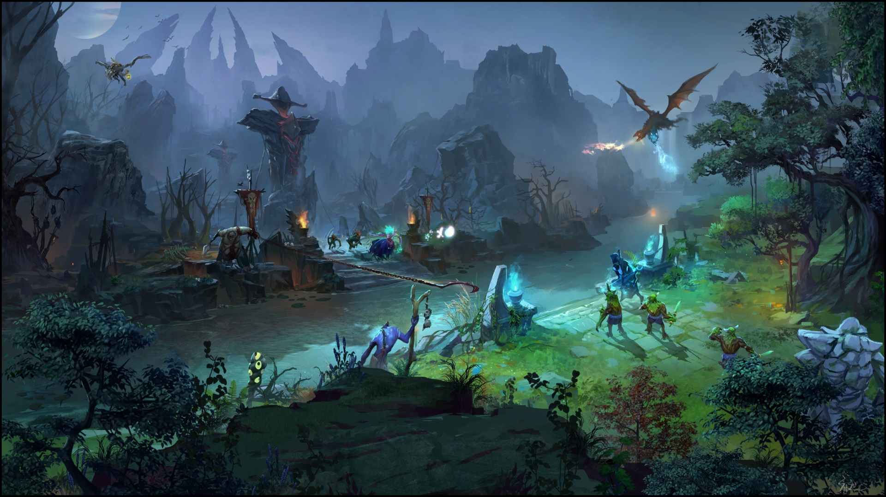
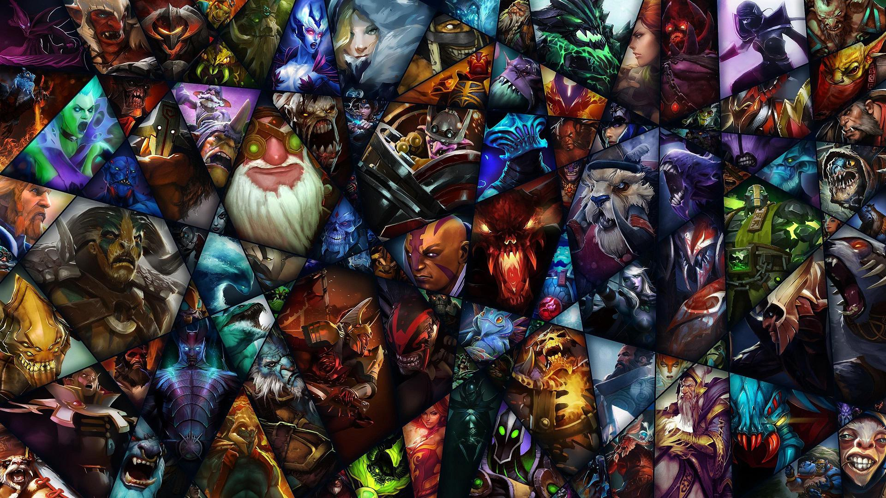

ABOUT
Two teams of five players compete to collectively destroy a large structure defended by the opposing team known as the "Ancient", whilst defending their own.

Map
The two teams—known as the Radiant and Dire—occupy fortified bases in opposite corners of the map, which is divided in half by a crossable river and connected by three paths, referred to as "lanes".

Heroes
122 heroes are free for players to explore. Regardless core or support, each hero has its own background, abilities, strength and weakness.

Esports & The International
All professional team players are focusing on a single goal-—victory at The International. The players go through Dota Pro Circuit seasons to become qualified for the final competition.